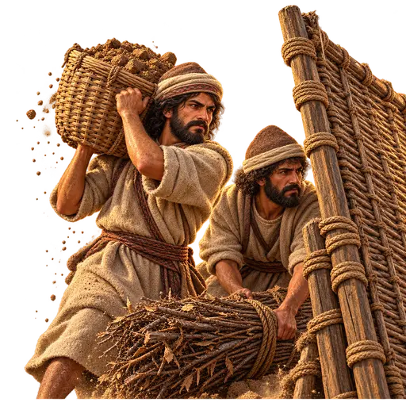
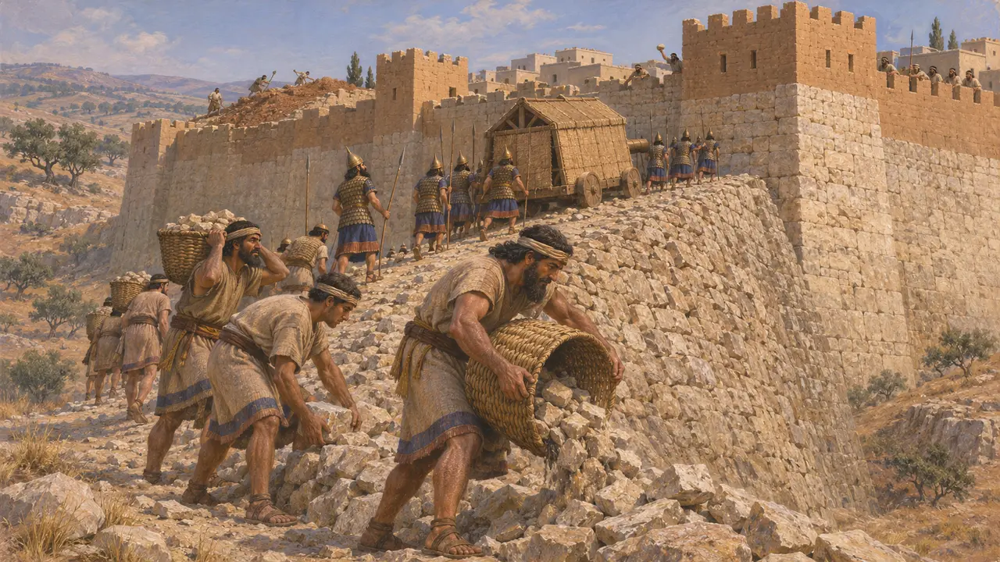
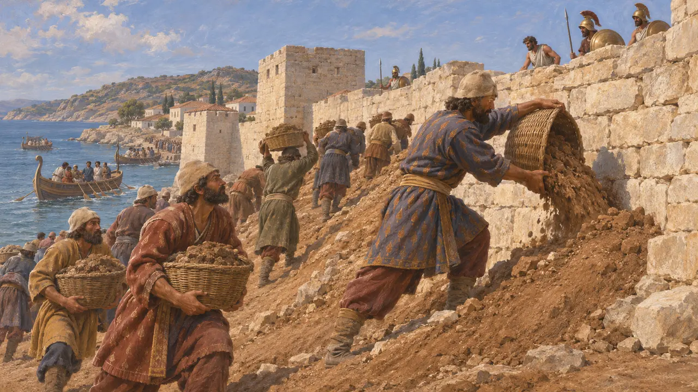
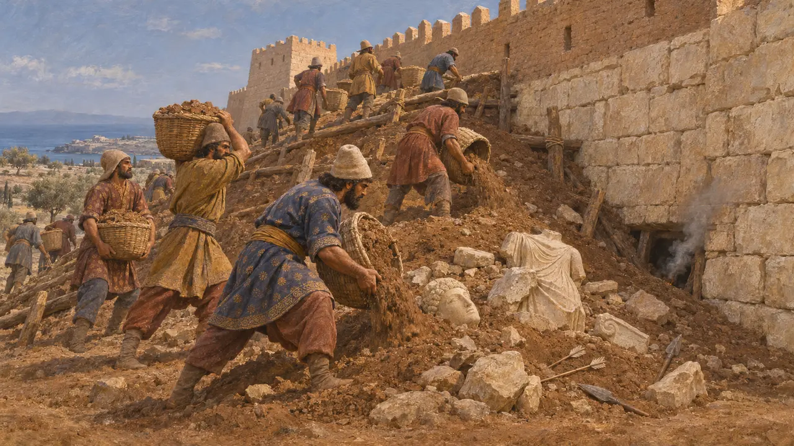
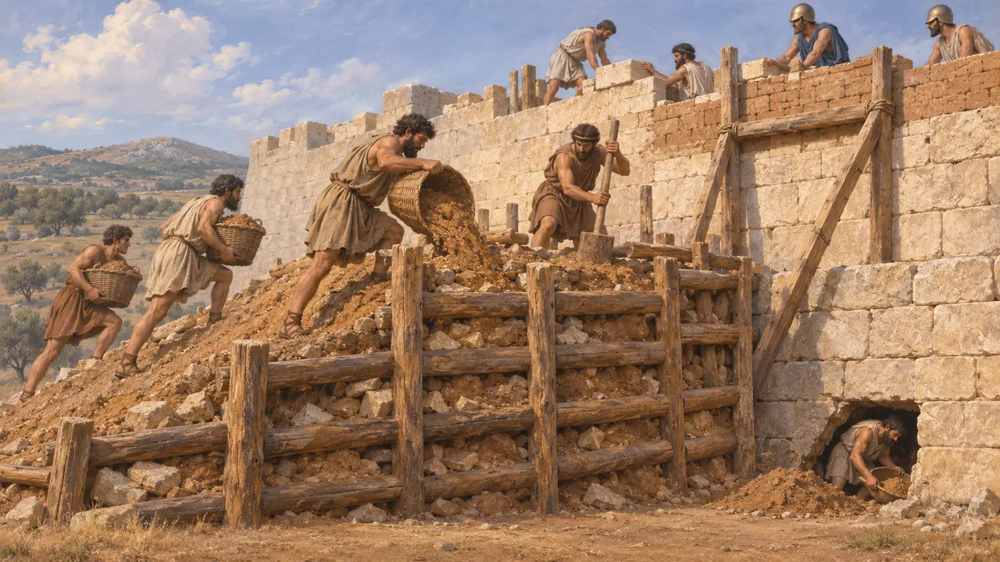
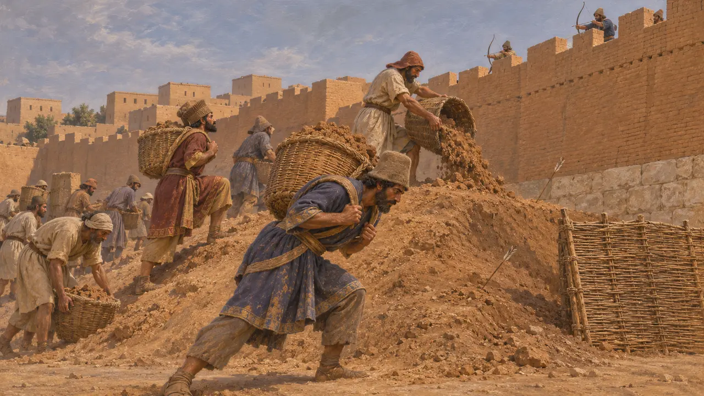

Энциклопедия › Воины и корабли

Носильщик земли
Люди, насыпавшие осадные валы у городских стен, Ближний Восток и Эгеида, до 479 года до н. э.
В игре: Уровень 1: Гробница основателя
Осадная насыпь представляла собой вал из земли, камней и брёвен, который наращивали у городской стены, пока нападающие не могли добраться до её верха. Для этого требовалось множество носильщиков, работавших под обстрелом. На Ближнем Востоке это был старый ассирийский приём, и персы применяли его при взятии греческих городов Ионии и Кипра.
В игре: Вражеские носильщики земли насыпают вал под прикрытием плетёных щитов, пока он не превратится в дорогу через стену, а лучники на стене могут их убивать. Исторически насыпь была прежде всего орудием войск самого Царя, так что в игре роли поменялись местами.

Ассирийский прецедент под Лахишем
Свидетельства эпохиКогда Синаххериб Ассирийский в 701 г. до н. э. осадил Лахиш в Иудее, его войско насыпало у юго-западного угла города огромную осадную насыпь из камней. Археологи проследили её на местности, а также встречную насыпь, возведённую защитниками изнутри. Рельефы из дворца Синаххериба в Ниневии показывают тараны и воинов, поднимающихся по таким насыпям к стенам.
D. Ussishkin, The Conquest of Lachish by Sennacherib, 1982

Гарпаг и насыпи Ионии
Античное свидетельствоГеродот пишет, что после завоевания Киром Лидии его полководец Гарпаг брал греческие города побережья, запирая жителей за стенами и затем возводя против стен насыпи. Он описывает Фокею перед лицом этой угрозы: её граждане сели на корабли и ушли, не дожидаясь падения города.
Herodotus 1.162-164

Персидская насыпь у Старого Пафоса
Свидетельства эпохиВ Старом Пафосе на Кипре археологи обнаружили персидскую осадную насыпь, возведённую у городской стены — вероятно, во время кипрского этапа Ионийского восстания, около 498–497 гг. до н. э. В её засыпке нашлись земля, камни, брёвна и множество разбитых статуй и вотивных предметов, скорее всего взятых из святилища за стенами. Защитники вели подкопы под насыпь и пытались её поджечь; в завалах лежали сотни наконечников стрел и копий.
F. G. Maier and V. Karageorghis, Paphos: History and Archaeology, 1984

Как насыпали осадный вал и бились за него
Античное свидетельствоСамое подробное античное описание даёт Фукидид — для осады Платей пелопоннесцами во главе со спартанским царём Архидамом в 429 году до н. э. Осаждающие укрепили склоны насыпи деревянной решёткой и заполнили её брёвнами, камнями и землёй. Платейцы надстраивали стену всё выше и выбирали землю из-под насыпи. Геродот сообщает, что персы взяли Соли на Кипре родственным способом — подкопав стену.
Thucydides 2.75-76; Herodotus 5.115

Кто носил землю
СпорныйИсточники редко говорят, кто носил землю. Это могли быть воины, работники, набранные в окрестных землях, или пленные, и историки расходятся во мнениях, насколько персидские армии полагались на каждую из этих групп. Кем бы они ни были, они работали на расстоянии полёта стрелы от стены, и потери среди них, вероятно, были велики.
P. Briant, From Cyrus to Alexander, 2002
Источники
- Herodotus 1.162-164
- F. G. Maier and V. Karageorghis, Paphos: History and Archaeology, 1984
- D. Ussishkin, The Conquest of Lachish by Sennacherib, 1982
- Thucydides 2.75-76
- Herodotus 5.115
- P. Briant, From Cyrus to Alexander, 2002